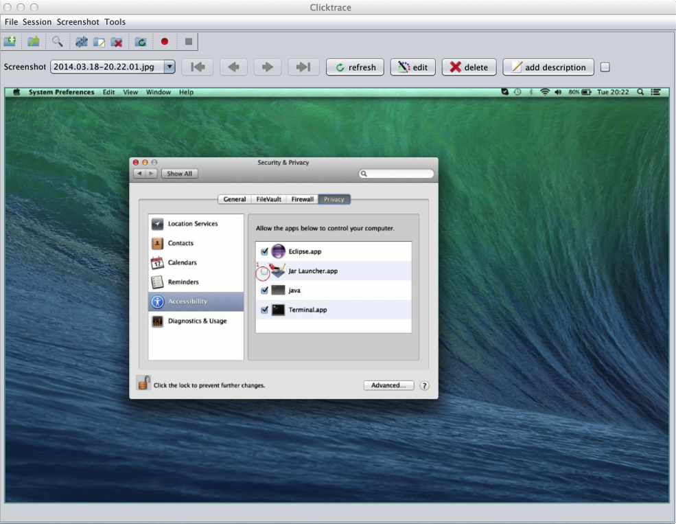

An intelligent screen capture application.
It's main idea is to take screenshots whenever something changes on the screen.
Focus on the task not being bothered by screenshots recording in the background.
Record test cases, documentation, or whatever you want.
Provide a lot of information with little effort.
Published under GPL open-source license.
Features
- easily take, remove, and reorder screenshots

- organize in sessions

- annotate with labels and descriptions (markup syntax support)

- edit with your favorite image editor

- automatically mark mouse clicks

- find by keywords

- use best compression format per screenshot (JPG, PNG)
- no screenshot on mouse movement (mouse movement is not considered a change)
- create HTML presentation
- export to Clicktrace Link for JIRA
Clicktrace is written in Java. You can run it on Windows/Linux/Mac, as long as you have Java 6 or higher installed.
